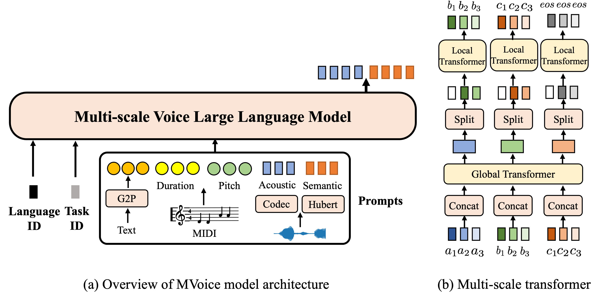

Anonymous Authors
Abstract. Large language models (LLMs) have successfully served as a general-purpose interface across multiple tasks and languages, while the adaptation of voice LLMs is mostly designed for specific purposes (either single-task or monolingual), where the advantages of LLMs especially for low-resource language processing and zero-shot task generalization are less exploited in the audio community. To bridge the gap, we introduce MVoice as a multi-modal voice LLM and conduct a comprehensive study on its capability to deal with multiple tasks/languages. When trained on ~200K hours of 6-language data for 4 voice generation applications, MVoice emerges notable advantages: 1) as scalable learners to improve performance with end-to-end local and global multiscale transformers; and 2) as multitask learners by adjusting prompts to share common knowledge across modalities (speech/singing) and present in-context learning abilities by generalizing to unseen tasks not explicitly train on; 3) as multilingual learners to alleviate data scarcity of low-resource languages by including rich-resource language training data. Experimental results demonstrate that MVoice exhibits superior audio quality and style similarity compared with competitive baseline models in monolingual/cross-lingual voice generation.

In this section, we provide the generated audio samples with other systems on the text-to-speech task.
| Text | Prompt | MetaStyleSpeech | YourTTS | GenerSpeech | MVoice (ours) |
|---|---|---|---|---|---|
In this section, we provide the generated audio samples with other systems on the voice-conversion task.
| Source Audio | Prompt | NANSY | ppg-vc | MVoice (ours) |
|---|---|---|---|---|
In this section, we provide the generated audio samples with other systems on the singing-voice-synthesis task.
| Text | Ground-truth | Prompt | FFT-Singer | DiffSinger | MVoice (ours) |
|---|---|---|---|---|---|
In this section, we provide samples to show the cross-lingual style tranferring ability of our model.
| Source Audio | Prompt | MVoice |
|---|---|---|
In this section, we provide samples to show the noise condition tranferring ability of our model.
| Source Audio | Prompt | MVoice |
|---|---|---|
In this section, we provide samples to show the emotion tranferring ability of our model.
| Emotion | Source Audio | Prompt | MVoice |
|---|---|---|---|
| Angry | |||
| Sad | |||
| Happy |